CGOcc: Learning Cross-Gaussian Dependencies
for 3D Semantic Occupancy Prediction

Abstract
In Gaussian-based semantic occupancy prediction, overlapping primitives can provide ambiguous class predictions, making their joint interpretation important for voxel classification. However, current methods using spatially weighted mixtures neglect explicit modeling of cross-primitive dependencies, limiting the readout’s ability to utilize category-specific relational evidence. Hence, we introduce CGOcc, a supervised multi-camera framework that explicitly models Cross-Gaussian dependencies for 3D semantic Occupancy prediction. CGOcc integrates appearance and geometric observations to refine Gaussian states and encodes cross-Gaussian dependencies in a diagonal-plus-low-rank representation. To incorporate these dependencies into voxel classification, CGOcc uses a class-conditional projection to extract diagonal and signed cross-Gaussian statistics without constructing a dense dependency matrix. The readout then refines occupied-class probabilities using these statistics while preserving a learned reference’s occupied mass and free probability. Extensive experiments on nuScenes demonstrate CGOcc achieves state-of-the-art performance, with larger gains at high Gaussian overlap and improved predictions near boundaries. Ablation studies validate the effectiveness of covariance-aware prediction and support its synergy with geometric interaction.
Method
CGOcc combines geometry-conditioned Gaussian interaction with a class-conditional semantic readout. The scene is represented by 7,200 Gaussian candidates initialized from six surround-view cameras.
Geometry-Conditioned Multi-Source Gaussian Interaction

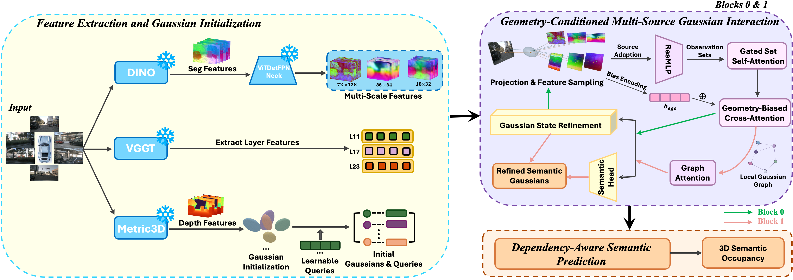
Dependency-Aware Semantic Prediction
The readout in Section 3.3 projects learned Gaussian dependencies into class-specific voxel statistics. Signed cross-Gaussian evidence then guides a bounded semantic correction.

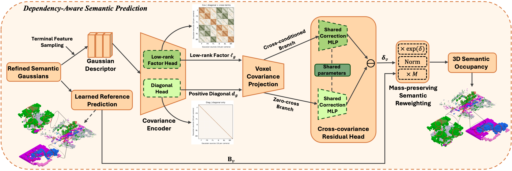
Experimental Results
We evaluate on two nuScenes occupancy protocols. CGOcc obtains 31.10% mIoU / 56.32% OccIoU on Occ3D-nuScenes and 21.25% mIoU / 33.65% OccIoU under the SurroundOcc-nuScenes protocol.
| Method | OccIoU ↑ | mIoU ↑ |
|---|---|---|
| MonoScene | 29.55 | 6.06 |
| BEVDet | 38.23 | 19.38 |
| OccFormer | 41.95 | 21.93 |
| BEVStereo | 44.33 | 24.51 |
| BEVFormer | 50.78 | 26.88 |
| CTF-Occ | 51.24 | 28.53 |
| RenderOcc‡ | 48.25 | 26.11 |
| TPVFormer | 50.82 | 27.83 |
| SurroundOcc | 53.13 | 29.21 |
| GaussianFormer-2† | 53.75 | 29.62 |
| CGOcc Ours | 56.32 | 31.10 |
17 occupied classes · 0.4 m voxels · camera-visible evaluation.
† 128 channels. ‡ Uses both 3D voxel labels and LiDAR-derived 2D semantic/depth labels.
| Method | OccIoU ↑ | mIoU ↑ |
|---|---|---|
| MonoScene | 23.96 | 7.31 |
| Atlas | 28.66 | 15.00 |
| BEVFormer | 30.50 | 16.75 |
| TPVFormer-lidar | 11.51 | 11.66 |
| TPVFormer | 30.86 | 17.10 |
| OccFormer | 31.39 | 19.03 |
| GaussianFormer | 29.83 | 19.10 |
| GaussianFormer-2† | 30.56 | 20.02 |
| SurroundOcc | 31.49 | 20.30 |
| CGOcc (Ours) | 33.65 | 21.25 |
16 occupied classes · 0.5 m voxels · ignore labels excluded, without an additional camera-visibility mask.
† 128 channels. The two protocols are evaluated separately.
Qualitative Comparisons on Occ3D-nuScenes
Across three validation scenes, CGOcc produces more continuous drivable surfaces and more regular vehicle shapes in the selected examples.

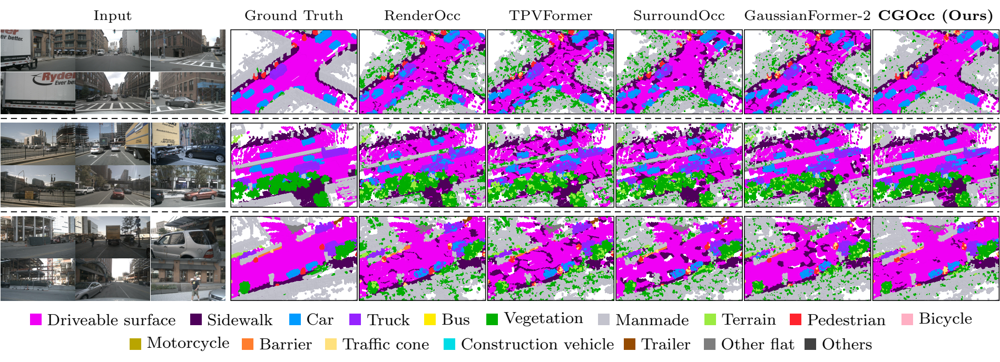
Extended Comparisons on SurroundOcc-nuScenes
Five additional validation scenes examine drivable-surface continuity, vehicle shape, and roadside structure under the SurroundOcc annotation and evaluation protocol.

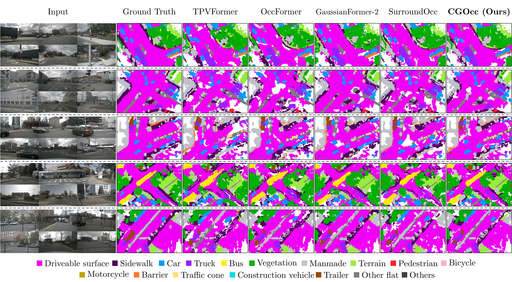
Semantic Refinement near Boundaries
Boundary analysis examines both occupied-class interfaces and occupied/free edges. The supplementary material extends the selected local examples with distance-based evaluation and five-scene comparisons.

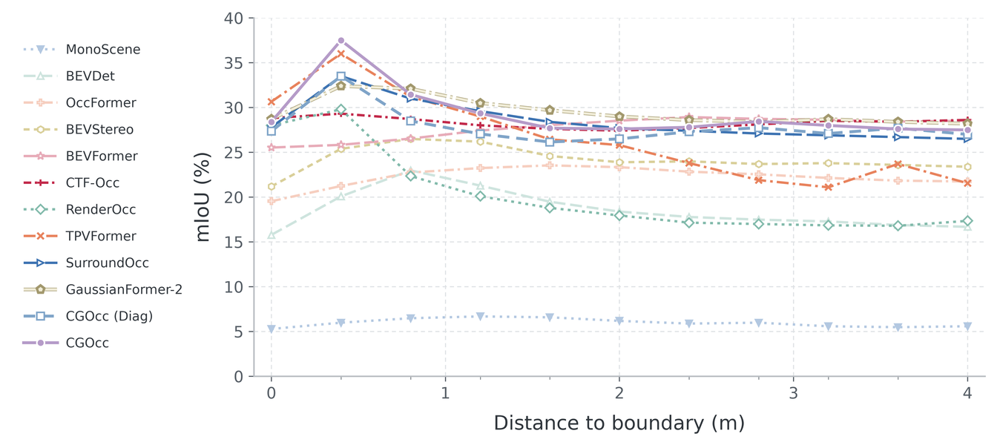

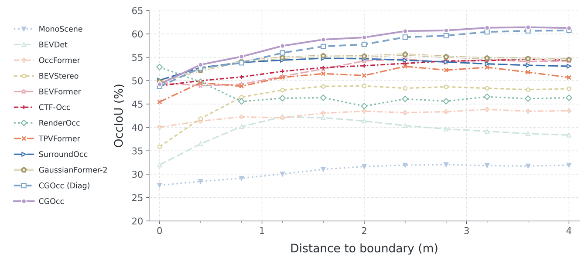
CGOcc has the highest mIoU at 0.4 m and the highest OccIoU from 0.4 to 4.0 m among the compared methods. At zero distance, TPVFormer and RenderOcc retain higher mIoU and OccIoU, respectively.
Local Prediction Changes

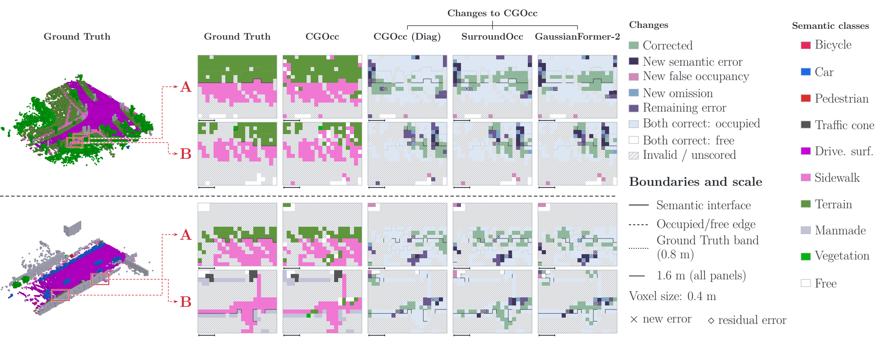
Extended Boundary Comparisons

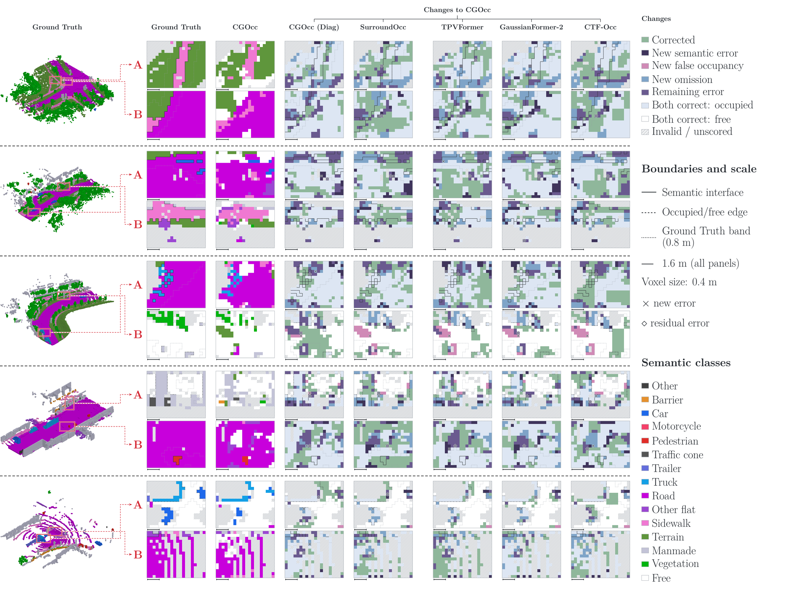
Understanding Gaussian Overlap
When multiple primitives contribute to the same voxel, class-conditional relationships provide additional evidence for semantic prediction. We compare CGOcc with an independently trained diagonal variant using fixed reference-defined voxel groups.

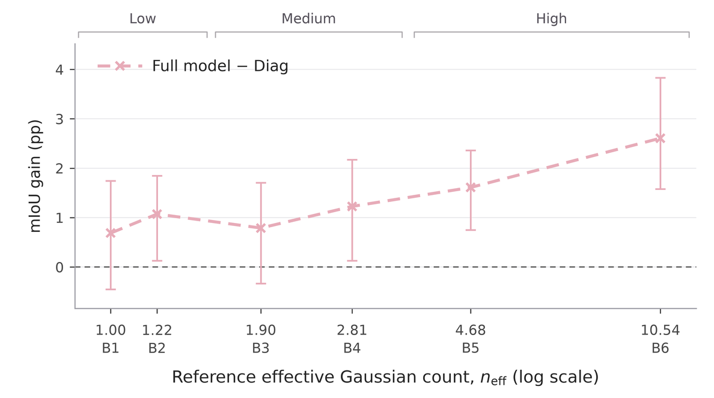
Overlap and Prediction Changes

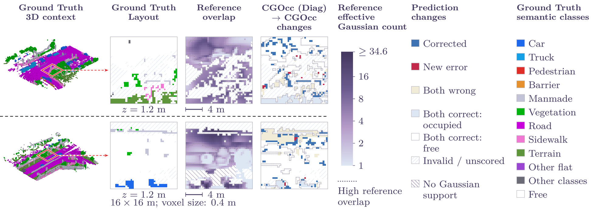
Five Additional Scenes

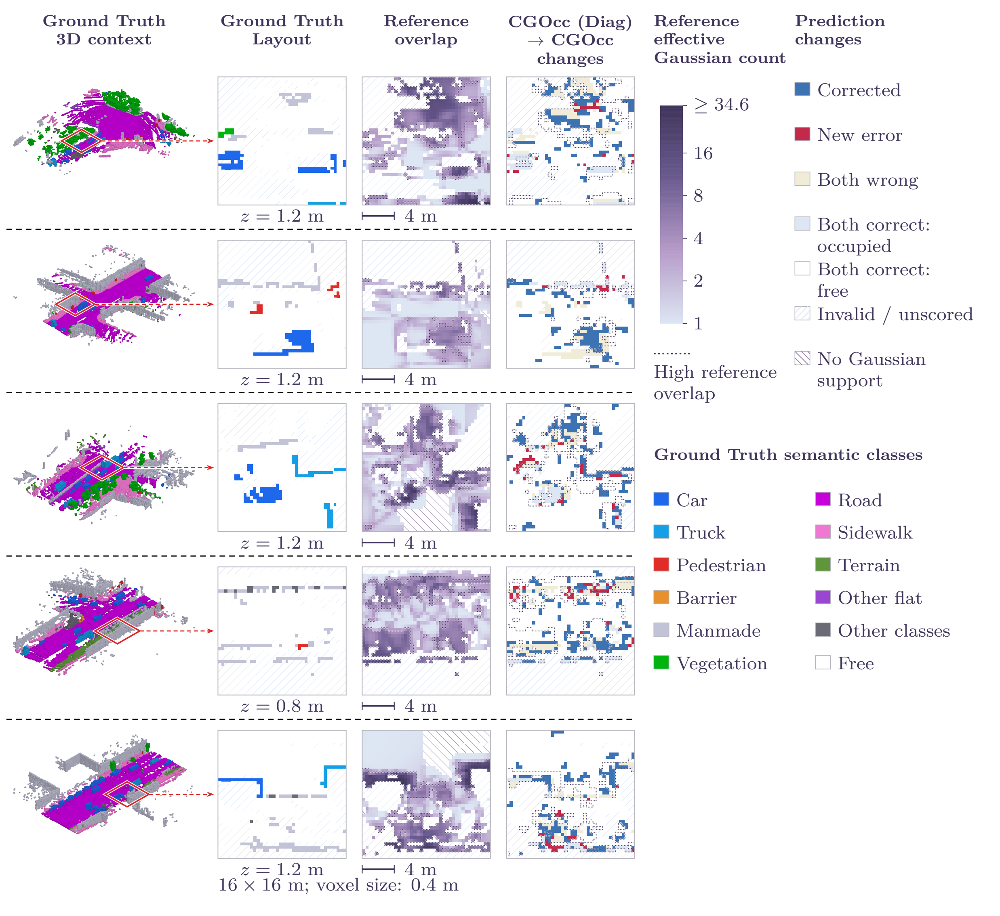
Ablation Studies
Class conditioning and signed cross-Gaussian interactions improve the semantic readout. Appearance and geometric features are complementary, and scene-dependent depth is important for initialization.
| Readout | mIoU ↑ | OccIoU ↑ |
|---|---|---|
| Initial aggregation only | 29.25 | 54.56 |
| Diagonal | 29.42 | 54.78 |
| Class-agnostic | 30.28 | 56.20 |
| Aligned factors | 30.43 | 56.24 |
| Full CGOcc | 31.10 | 56.32 |
Variants are trained independently; results reproduce the main-paper ablation.
| Features | mIoU ↑ | OccIoU ↑ |
|---|---|---|
| DINOv2 only | 28.71 | 54.31 |
| VGGT only | 30.36 | 55.22 |
| DINOv2 + VGGT | 31.10 | 56.32 |
| Initialization | mIoU ↑ | OccIoU ↑ |
|---|---|---|
| Uniform z-depth | 24.53 | 51.38 |
| Metric3D v2 | 31.10 | 56.32 |
Limitations
CGOcc relies on calibrated cameras, 3D voxel supervision, and pretrained depth estimates. It does not explicitly model temporal dependencies. Remaining semantic errors and new errors are visible in the qualitative comparisons.
BibTeX
@misc{huang2026cgocc,
title = {{CGOcc}: Learning Cross-Gaussian Dependencies
for 3D Semantic Occupancy Prediction},
author = {Huang, Zirui and He, Jiongle and Zeng, Yunfan
and Lu, Yuanzhi and Li, Guangye and Tang, Boyan
and Su, Weite and Sander, Pedro V.
and Zhang, Amy Hui},
year = {2026},
note = {Manuscript},
url = {https://SomersBuchannan.github.io/CGOcc/}
}